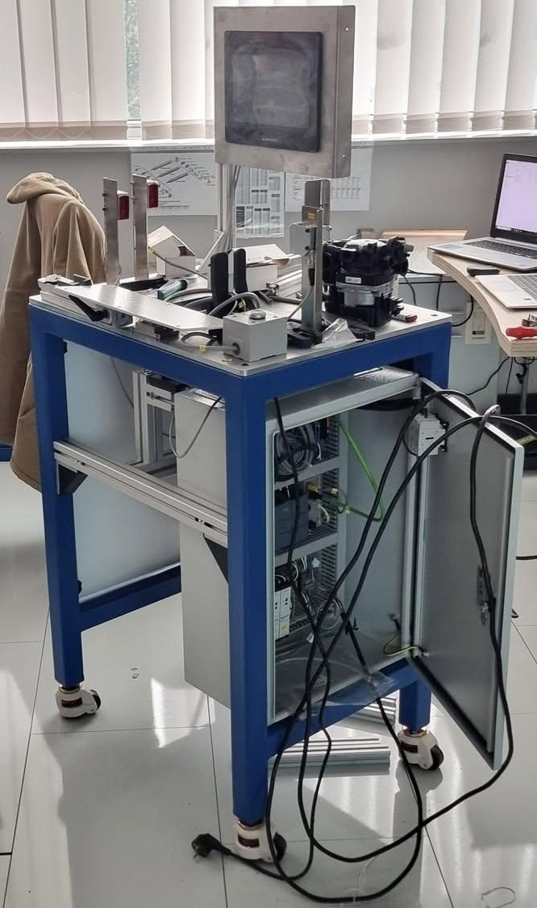
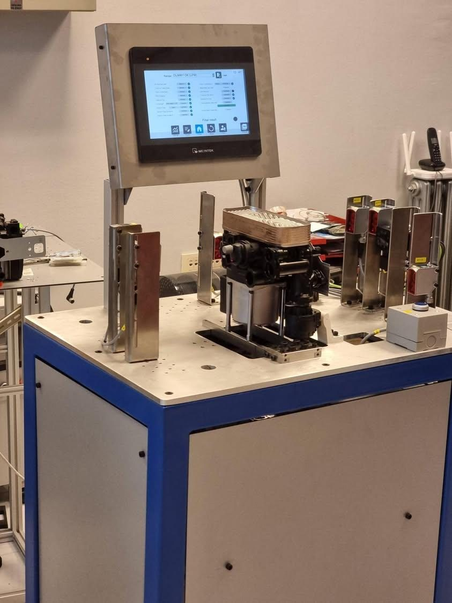
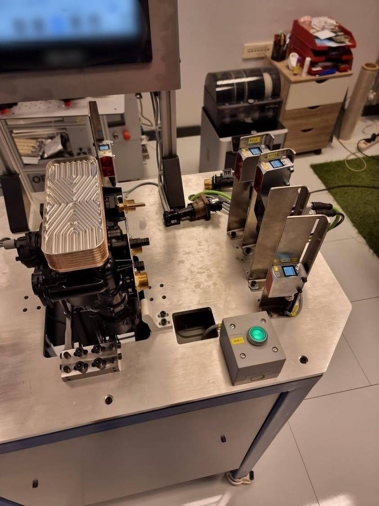

Grundfos Multi-Variant Final QC Test Station
Design and development of a flexible final quality-control station intended to inspect approximately 20 different pump variants on a single platform. The station verifies final assembly completeness and the position of critical components using a bottom-mounted SensoPart vision camera together with multiple precision sensors.

One final QC station for approximately 20 pump variants
The station had to provide a common final-inspection platform for a broad family of pump configurations rather than requiring a dedicated test setup for each product. The key requirement was to verify that the pump reached the final assembly stage correctly: required components had to be present, critical parts had to be in the expected position, and the final configuration had to satisfy the appropriate inspection criteria for the pump variant being checked.
One station designed to support final QC across approximately twenty different pump variants.
Verification focused on whether all required parts were mounted before release.
Critical component positions were checked as part of the final inspection.
Machine vision and precision sensors were combined instead of relying on one inspection method.
Test-station design across mechanics, sensing and operator interaction
My work focused on the design and practical development of the test station as a mechatronic system. This included the physical inspection layout, pump positioning and accessibility, placement of the vision system and precision sensors, integration of the operator interface, and development of a station architecture that could accommodate a large number of pump variants within one compact test bench.
Mechanical layout
Designed the station arrangement around the pump test position, inspection access, sensor mounting and operator usability.
Inspection concept
Combined vision-based inspection with several precision sensors so different assembly features could be verified by the most suitable method.
Multi-variant flexibility
Developed the station around a shared inspection platform capable of supporting approximately twenty pump configurations.
Operator interface
Integrated an HMI-based workflow so inspection states and the final QC result could be presented clearly to the operator.
Vision from below + precision point checks
Bottom-mounted SensoPart camera
The camera was positioned below the pump to provide a dedicated inspection view from the underside. This allowed the station to perform visual verification of selected assembly features and component positions that were best evaluated from below.
Precision sensors
Several high-precision sensors were positioned around the pump to verify selected locations and assembly conditions independently of the vision system.
Combined verification
Using both inspection methods created a more flexible final-QC concept: vision handled visual/positional checks while dedicated sensors provided precise confirmation at defined inspection points.
Why the combined approach mattered
A single inspection technology would not be ideal for every feature across roughly twenty variants. The test station therefore used different sensing principles within one platform, allowing the inspection strategy to be adapted to the geometry and assembly features of each pump configuration.
Presence, position and assembly completeness
The purpose of the station was not to perform an intermediate manufacturing operation. It acted as a final verification stage, checking whether the completed pump matched the expected assembly condition before it could be considered finished.
The assembled pump is placed in the defined inspection position.
The product is located consistently relative to the station inspection points.
The bottom-mounted SensoPart camera checks selected visible features and positions.
Precision sensors verify additional critical assembly locations.
The station evaluates whether required assembly conditions are satisfied.
The operator receives the final QC status through the station interface.
Flexibility was part of the machine architecture
Supporting approximately twenty different pumps meant the station could not be designed around a single fixed product geometry. Sensor placement, inspection access and the overall station layout had to allow the same test bench to evaluate a family of products with different configurations. The engineering focus was therefore on a common mechanical and sensing platform with variant-dependent inspection criteria rather than separate hardware for every pump type.
From inspection concept to physical test bench


Final quality control consolidated into one flexible station
The project demonstrates test engineering beyond a simple presence sensor or single-camera inspection. The station was designed around the challenge of verifying final assembly across approximately twenty product variants, combining mechanical design, machine vision, precision sensing and an operator-facing interface in one reusable QC platform.
For an engineering portfolio, the main value of the project is the system-level approach: understanding what must be verified on the finished product, selecting the appropriate inspection method for each type of feature, arranging the hardware around multiple product configurations and turning those checks into a practical final-QC station.